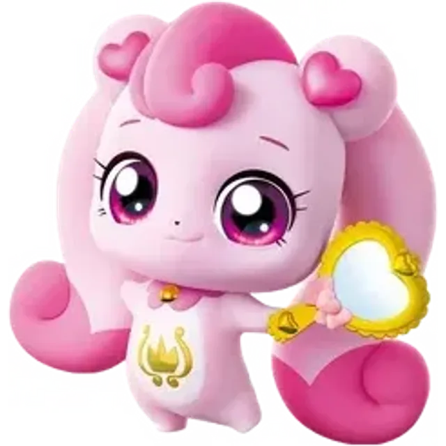

하츄핑
Heartsping
1기 감정
로열
캐치! 티니핑 시리즈의 메인 티니핑이자 로열 티니핑. 로미와 더불어 양대 주인공이자 에스에이엠지 엔터테인먼트의 메인 마스코트 캐릭터. '사랑의 티니핑'. 로미의 단짝 친구로 함께 다니는 애교 넘치는 로열핑으로, 사랑과 배려가 넘치는 성격이다. 티니핑 중 로미와 가장 친하고 오래 지낸 명실상부 절친이며 로미의 영원한 파트너이자 영원한 친구다. 비밀의 방에 있던 티니핑 봉인이 풀려나 지구로 흩어질 때 로미가 손을 꼭 잡아준 덕분에 티니핑 중 유일무이하게 지구로 떨어지지 않고 로미와 함께 처음부터 같이 다녔으며, 모든 티니핑 중 유일무이하게 TVA의 모든 회차와 극장판, 외전까지 출연 중이다. 현재 모든 티니핑들 중 가장 많은 대사를 한 티니핑으로 알려져 있다.
- 기수
- 1기 감정
- 등급
- 로열
- 성별
- 여성
- 감정·상징
- 사랑
- 생일
- 3월 6일
- 모티브
- 하트(1기) 핑크 다이아몬드(사랑의 보석)(2기) 꽃(3기) 딸기 케이크(4기) 하트 별똥별(5기) 하트 + 왕관(6기)
- 심볼
- 하트
- 소품
- 손거울(1기) 하프(2기) 향수(3기) 핸드벨(4기) 글로우 퍼프(5기) 요술봉(6기) 핸드 마이크 요술봉(7기)
- 파트너
- 로미
- 좋아하는 것
- 손거울을 보며 사랑스러운 표정 연습하기(1기) 차 마시기, 하프 치기(2기) 로미와 함께 있는 모든 순간, 생크림 딸기 케이크(3~4기) 로미와 함께 있는 매 순간, 평화로운 안정감(5기) 로미, 손거울 보며 사랑스런 표정 짓기, 딸기, 딸기 케이크(6기)
- 싫어하는 것
- 억지로 잠을 깨우는 것, 갑자기 깜짝 놀라게 하는 것
- 좋아하는 음식
- 생크림 딸기 케이크, 딸기
- 성우
- 조경이
 이클립스핑 라이벌
이클립스핑 라이벌